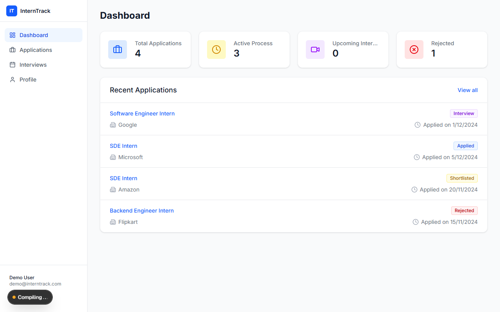

InternTrack — Internship & Job Portal
A comprehensive Next.js 16 application engineered to streamline student job hunting. Features filterable status tracking, upcoming interview schedules, response rate metrics, and secure Jose JWT session authentication with bcrypt password hashing.
Next.js 16
TypeScript
Prisma ORM
SQLite
Jose JWT
Tailwind CSS